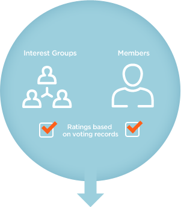

At Vote Reports, we believe the most reliable way of gauging a politicians compatibility with a voter is by evaluating them on their legislative voting record.
High grades mean the politician is graded well according to the issue they are being evaluated on (not used to rate a politicians performance).
Vote Reports does not rate politicians. Rather, every rating is pulled from two sources: interest groups (ACLU, NRA, etc.) and all registered members of the Vote Reports website.
 Ratings with a colored border are derived from limited sources or from candidates with no voting history.
Ratings with a colored border are derived from limited sources or from candidates with no voting history.
 Ratings with a question mark mean that we have no records for the politician on this viewed issue.
Ratings with a question mark mean that we have no records for the politician on this viewed issue.
Interest groups individually have their own criteria of evaluating a politician. This usually includes voting records, interviews, survey results, and sources of funding. We also import interest group ratings from Project VoteSmart.

Registered members can also create their own grades on politicians. Members create a report outlining which bills they support and are against. The system then automatically generates a score for all politicians.
Since many interest groups and member generated reports overlap certain subjects, we combine them into Causes. In essence, it’s a stance on an issue. Collecting many scores helps average the grade and avoid one or more groups from polarizing a politicians grade.
These ratings and causes culminate into the comprehensive and easy-to-use Vote Reports VoterCard. vel ligula blandit sit amet sodales eros faucibus. Nulla facilisi.